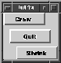

Chapter 4. Buttons |
This chapter shows how to use the Button class to put buttons in a dialog and how to respond to their events.
Our goal is to write a program with three buttons: Grow, Shrink, and Quit. The Grow button should make the dialog a little bigger in both width and height, the Shrink button should make the dialog a little smaller in both width and height, and the Quit button should exit the program. In addition, we want the Grow button to stay in the upper right hand corner, the Shrink button to stay in the lower left hand corner, and the Quit button to stay in the center.
Looking at the Program
Now, let's look at some of the details.
(1) /* Global names */
static const vname *name_GrowButton = NULL;
static const vname *name_ShrinkButton = NULL;
static const vname *name_QuitButton = NULL;
This is our first exposure to a vname. A vname is a string that has been hashed into a name table. Names that are part of the same table may be compared for equality using the == or != operations instead of the more time consuming string comparison functions. The Dialog class makes extensive use of vnames as identifiers for dialog items.
The comment called these global names. This was meant in two senses. The first is that these variables are global to this program. The second is that the Name class can manage several name tables. These names are stored in Galaxy's global name table. Names that are used with the Dialog class are always part of the global name table.
(2) vbutton *button;
A vbutton is a subclass of a vdialogItem. A vbutton is a dialog item that sends an event to your application when it is clicked. It doesn't have a value associated with it; it is not "on" or "off." If you want a dialog item that retains state between clicks you need a vcontrol. We will look at those in a later chapter.
(3) vdialogMove (dialog, 200, 200);
vdialogResize (dialog, 100, 100);
We set up the dialog much as we did in tut3c, but this time we use a different set of functions. The vdialogMove and vdialogResize functions are convenience functions for vwindowSetRect. You don't need to set up a vrect to use these functions but internally they call vwindowSetRect for you.
(4) /* Create 'grow' button */
button = vbuttonCreate ();
Creating a vbutton is similar to creating a vdialogItem.
(5) /* Add a notify function */
vbuttonSetNotify (button, growButtonNoteProc);
/* Add a title to it */
vbuttonSetTitleScribed (
button,
vcharScribeLiteral ("Grow")
);
Setting the notify procedure and title also parallels the vdialogItem.
(6) /* Add a tag to it */
name_GrowButton = vnameInternGlobalLiteral ("grow");
vdialogSetItemTag (vbuttonGetItem (button),
name_GrowButton);
This code creates a vname and attaches it to the button. This is called the dialog item's tag. You can attach a tag to any dialog item, but it is only needed if dialog items are to be located later or if dialog items have commands associated with them (commands are covered later). In this case, we need to locate the button in the future so we want to attach a tag to it.
The call to vnameInternGlobalLiteral puts the literal string "grow" into the global name table. This process of adding an entry to a name table is called interning. This is the most commonly used of all the vname functions.
The Button class does not provide an entry point to set the button's tag so we use the Dialog class's function. It is fairly common for managers to provide convenience functions for only the most commonly used functions. Since vdialogSetItemTag is infrequently used, the Button class does not provide its own vbuttonSetTag. Since vbuttons are built on top of vdialogItems, we can use any dialog item function, so we extract a pointer to the underlying vdialogItem with vbuttonGetItem and then call vdialogSetItemTag with the dialog item pointer.
(7) /* Add the item to the dialog */
vdialogAppendItem (dialog, vbuttonGetItem (button));
Again we need to get the underlying dialog item. Since vdialogAppendItem needs a pointer to a vdialogItem, and we have a pointer to a vbutton, we need to use vbuttonGetItem.
(8) static void shutdownMain ()
{
veventStopProcessing ();
}
This is a routine which we use to shut down our program. Both the Quit button and the dialog's close event indirectly call this procedure.
(9) if (et == veventWINDOW_STATE && veventIsClose (event))
shutdownMain ();
else if (et == veventWINDOW_CONFIGURE && veventIsSize
(event))
placeButtons (dialog);
This is how dialogNoteProc was changed. It now calls shutdownMain instead of calling veventStopProcessing directly.
We also look for a size event. Size events are generated whenever a user resizes a dialog. When a program is notified of a size event, it needs to position the buttons in the appropriate places. The placeButtons function does this for us.
Size events are a subtype of window configure events just as close events are a subtype of window state events.
This is part of the placeButtons function. The function puts a Grow button in the top left, the Shrink button in the lower right, and the Quit button in the center of the dialog.
To do this positioning, we first need to get the vrect for the dialog. The vwindowGetRect returns a pointer to the window's rectangle.
(11) /* Find the button */
button = (vbutton *)
vdialogFindItem (dialog, name_GrowButton);
The vdialogFindItem function returns a pointer to the specified dialog item. Here we use the button tag we set up in main. Since vdialogFindItem returns a pointer to a vdialogItem, and we know that this particular item is a vbutton, we must cast the return value to a vbutton pointer. This is one of the few places in Galaxy where a cast is required. Defining a vdialogFindButton wouldn't be a good way to eliminate the cast since there is no real guarantee that the item with that tag is a vbutton. A function call instead of a cast could mislead you into believing that you were guaranteed a vbutton. The use of a cast serves to remind us that we are deliberately changing the return type because we know it should be different. If your application needs to check, you can use the Class Manager to verify the class of the dialog item returned and take appropriate action if it isn't correct.
Now we need to get a copy of the vrect for the button so we can modify it. Note that once again we go to the underlying dialog item procedure.
(13) /* move the Grow button to top left */
buttonRect.x = 0;
buttonRect.y = dialogRect->h - buttonRect.h;
vdialogSetItemRect (vbuttonGetItem (button), &buttonRect);
We modify our copy of the rectangle to force the button into the upper left corner of the dialog. Remember that all coordinates are relative to the enclosing object, which, in this case, is relative to the dialog. Also remember that the origin of the coordinate system is the lower left corner.
The rest of the placeButtons function does similar operations for the Shrink and Grow buttons.
This is the notification procedure for the Quit button. All it needs to do is terminate the event loop. It could have called veventStopProcessing directly, but by calling shutdownMain, we provide a single interface for cleanly shutting down the program. If we need to do more complicated shutdown code in the future we need only modify one function instead of two.
(14) static void quitButtonNoteProc (vbutton *button, vevent *event)
{
shutdownMain ();
}
The next notify function is for the Grow button. This function is called when the Grow button is selected. It causes the dialog to grow in height and width by GROW_AMOUNT.
(15) static void growButtonNoteProc (vbutton *button, vevent *event)
{
vdialog *dialog;
vwindow *window;
vrect rect;
dialog = vdialogDetermineItemDialog (
vbuttonGetItem (button));
window = vdialogGetWindow (dialog);
rect = *vwindowGetRect (window);
rect.w += GROW_AMOUNT;
rect.h += GROW_AMOUNT;
vwindowSetRect (window, &rect);
placeButtons (dialog);
}
The first thing the function does is figure out which dialog the button belongs to. The vdialogDetermineItemDialog function does this. Once we determine the dialog, we get the window pointer from it so we can use it later. Then we get a copy of the window's vrect.
Then we increase the width and height by GROW_AMOUNT and set the window's rectangle to the new values. Lastly, we call placeButtons to put the buttons in the correct place on the newly sized dialog.
The notify function for the Shrink button performs similar operations.
Figure 3. The dialog of TUT4A

Compile and run the program. A dialog similar to the one shown in Figure 3 is displayed. Try resizing the window and see how the buttons move to their proper location. Click the Grow and Shrink buttons and notice how the dialog changes size as well.
You may notice that if you click on the Shrink buttons too many times, the program crashes due to an error which in turn generates an exception. The problem occurs when we shrink the dialog to negative sizes. There are two approaches to solving this problem. One solution is discussed in the next chapter and involves using the Spring class.
|
|
Previous Chapter | Next Chapter Tutorial Contents Switch to Another Document |
Need help? Contact Visix. Copyright 1996-97, Visix Software Inc. |